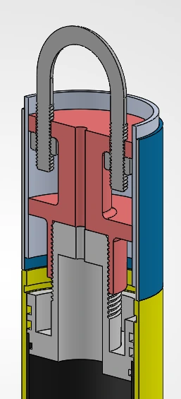
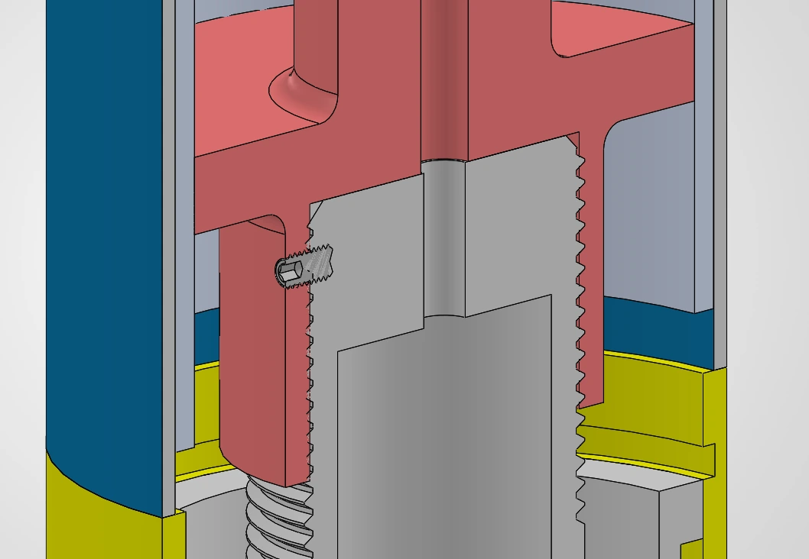
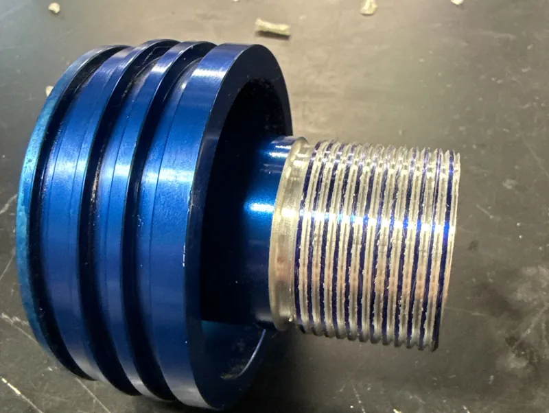
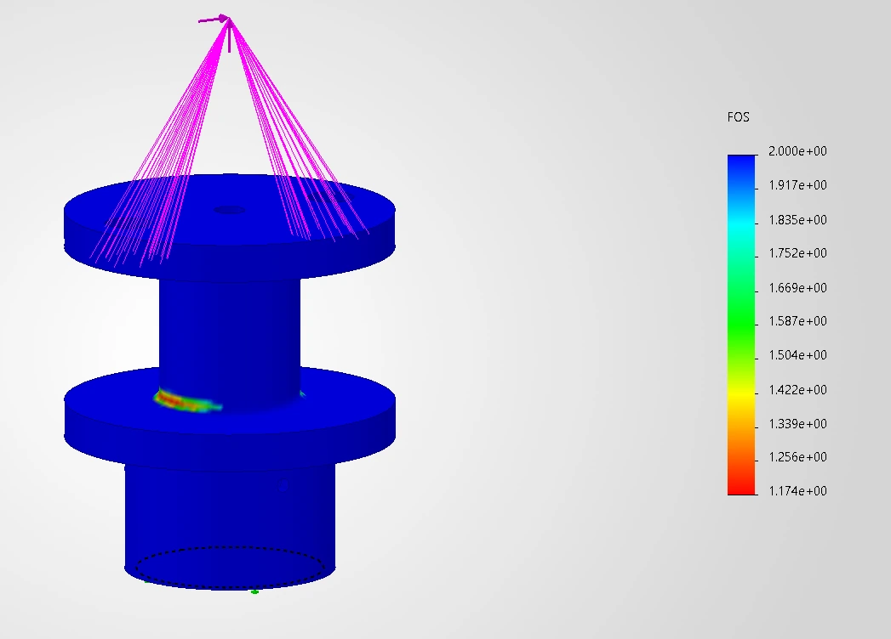
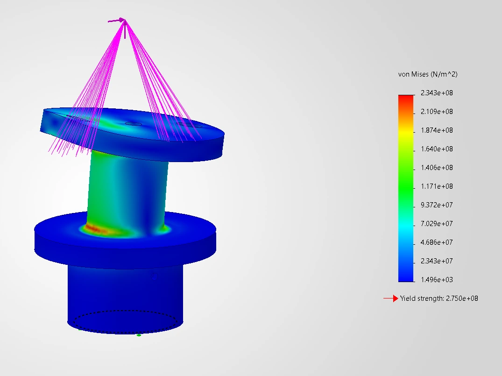

What the part has to do
On this rocket the motor case is the outer wall, so the airframe above the motor has to attach to the motor itself. The coupler threads onto the forward closure, sits inside the body tube, and anchors the recovery system through a U-bolt in its top bulkhead. That puts it in the load path when the parachutes deploy.
It threads onto the same closure that carries the head end ignition leads.
The coupler is two pieces. The red piece is machined with two flanges, and each flange has radial holes around its edge. The gray tube slides over both flanges and is screwed into those holes. The blue body tube or nose cone then slides over the whole assembly.




Design choices so far
- Thread. The closure’s knurled grip is replaced by a 1-1/2"-12 UNF thread, which I cut on a manual lathe (shown below). Loki’s guidance set the limits: hold the closure on its major diameter in the chuck, and stop the thread before the wall gets thin next to the smoke well, which runs hot.
- Set screw. A set screw passes through the coupler wall into the closure thread.
- Material. 6061-T6 aluminum.
- Load. I’m sizing the joint for a recovery load of 1,000 lbf.
- Concepts. Each member of the sub-team modeled a concept so we could compare approaches before committing to one.
Cutting the thread
I cut the closure’s thread by single-point threading on a manual lathe. It was my first time threading a part this way.

Simulation
I checked the coupler body in SOLIDWORKS Simulation with the threaded skirt held fixed. I loaded it with a worst case: 1,000 lbf at 45° to the rocket’s axis, acting where the U-bolt attaches to the top bulkhead. The recovery harness can’t physically pull at that angle, but it is the most severe theoretical loading, so it bounds the load that could cause a failure. The model uses 6061-T6 aluminum.
- 1,000lbf
- Worst-case load at the U-bolt, 45° off axis
- 1.17
- Minimum factor of safety
- 234MPa
- Peak von Mises stress
- 275MPa
- Yield strength of 6061-T6
Both plots point to the same spot: the fillet where the central post meets the lower flange. Away from it the plot is almost entirely blue, which on this scale means a factor of safety of 2 or more.




Next steps
We are now working to make the coupler lighter while keeping it rated for 1,000 lbf, with the post-to-flange fillet as the spot to watch. After that the part gets machined.